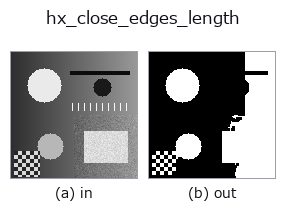

halcon_ext op• データ種: image → image
• 呼び出し: fullseye.apply(img, "hx_close_edges_length", a=0.5, b=0.5) (2-D は 1 画像 + 2 スカラつまみ a,b∈[0,1] のモデル)
• HALCON 相当: close_edges_length(意味・パラメータは HALCON リファレンスが参考になる)

*図は合成の入力 128×128 で実際に走らせた出力。左が入力、右が出力。点群は上から見た散布(明るさ = z)、1-D 列は折れ線、体積は z 方向の最大値投影、動画は中央フレーム、複素画像は振幅、絵にならない返り値は値そのもの。*
つまみ a を振る(0.1 / 0.5 / 0.9、もう一方は既定):
▸ hx_close_edges_length: knob a sweep (docs site)
つまみ b を振る(0.1 / 0.5 / 0.9、もう一方は既定):
▸ hx_close_edges_length: knob b sweep (docs site)
別の画像でも(合成シーン / 写真 / 硬貨。上段が入力、下段がその出力。つまみは既定):
▸ hx_close_edges_length: other inputs (docs site)
*4 列目はカラー (H,W,3) の入力。この op は色を跨がずに扱える(色チャネルを 3 本目の空間軸として畳み込まない)。*
close_edges に加え、長さ(画素数)が閾値未満の短いエッジ断片を除去する。
`v > a で二値化 → 3×3(8 近傍)構造要素で 1 回 binary_closing → ndimage.label`(既定の 4 近傍連結)で
連結成分にし、画素数が `min_len` 未満の成分を落として 0/1 の float 画像で返す。
• `a` → 二値化しきい値。
• `b → 残す最小画素数 min_len = 2 + int(b*20)`(2〜22)。
• 成分が 1 つも無ければクロージング結果をそのまま返す。
注意: クロージングの構造要素は固定 3×3 で、`hx_close_edges` のような幅の調整は無い。ラベリングが 4 近傍のため
斜めにつながる 1 画素幅の線は別成分に分かれ、「長さ」が短く数えられて消えやすい。`binary_closing` は画像外を
0 と扱うので端 1 画素の帯は常に 0 になる。「長さ」は成分の画素数であり幾何学的な線長ではない(塊も長いと数える)。
• gallery2d_halcon_ext ファミリ ガイド
• サンプルデータ カタログ(DL URL / ライセンス) — 2-D は skimage.data(BSD/public)+ 合成、3-D は実データ源(Stanford/PDS 等)の DL URL。
• 演算子の来歴・参考文献 — この op 族の元になった研究/手法の出典。
• アルゴリズムの正典(著者・年)と用途は上記ファミリ使い方ガイドに記載。
下のプログラムは実際に走ることを確かめてある(図と同じ入力)。Studio のヘルプではこのブロックがボタンになり、その場で読み込んで実行できる。
hx_close_edges_length 0.50 0.50
▸ Load this pipeline · Load & run
• gallery2d_halcon_ext — py -3.11 examples/gallery2d_halcon_ext.py
image を入力に取れる)identity · gaussian · mean_box · bilateral · unsharp · median · min_filter · max_filter
halcon_ext)hx_gen_circle · hx_gen_ellipse · hx_gen_rectangle2 · hx_gen_checker_region · hx_gen_grid_region · hx_gabor · hx_fit_surface1 · hx_fit_surface2
*Provenance: ops.py — 2D operator registry. この per-op ノートは tools/opdocs.py md が自動生成(手編集しない)。*
© 2026 Kazufumi Furuse — Fullseye operator documentation. Licensed under Apache-2.0.
{kind=link}
{kind=link}
{kind=link}